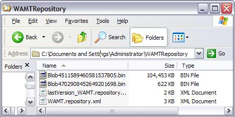
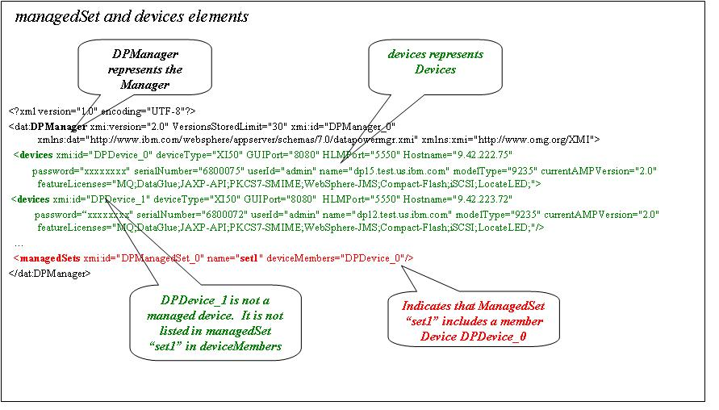
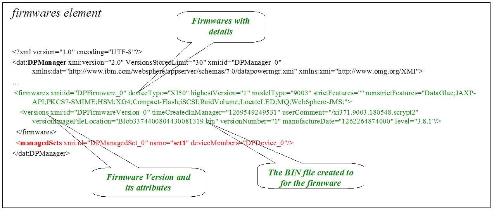
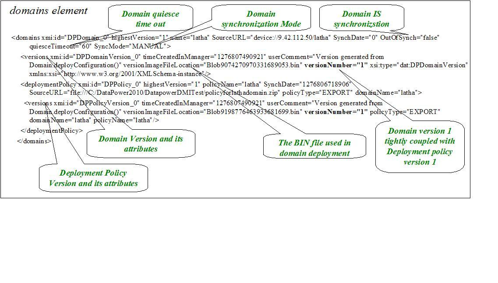

An implementation of the interface should allow callers to persist information related to common operations and
features supported by IBM Appliance Management Toolkit clientAPI.
All clientAPI objects which need to be persisted, example Device,
implement the {@link com.ibm.datapower.amt.dataAPI.Persistable}
interface. The clientAPI correlates a clientAPI object to an implementation of the related dataAPI Stored object. For example:
{@link com.ibm.datapower.amt.clientAPI.Device} that is used to deploy a Domain or Firmware version{@link com.ibm.datapower.amt.clientAPI.ManagedSet} with {@link com.ibm.datapower.amt.clientAPI.Device} members .{@link com.ibm.datapower.amt.clientAPI.FirmwareVersion} that is deployed to a Device{@link com.ibm.datapower.amt.clientAPI.Domain} that is can be used to deploy a domain configuration with a deployment policy{@link com.ibm.datapower.amt.clientAPI.DomainVersion} deployed to a DataPower device{@link com.ibm.datapower.amt.clientAPI.DeploymentPolicyVersion} used in the deployment of a domain configurationThe local file system implementation of the dataAPI persists all information needed by the manager to the local file system. This is the default implementation of the dataAPI interface. Any alternate implementation must be specified when the Manager is instantiated. The data is stored in multiple files whose location can be specified by the WAMT_REPOS_HOME JVM parameter.
The manager persists information about the persistable objects in the WAMT.Repository.xml file. This XML file contains elements that represent Java objects such as ManagedSets, Devices, FirmWares, and Domains. It also contains elements that represent the different FirmWare and Domain versions deployed to DataPower devices. The manager can also persist large binary objects of firmware, and versions of domain and deployment policies in BIN files. These BIN files are created in the location specified by the WAMT_REPOS_HOME java environment variable. The names of the BIN files are referenced in the WAMT.Repository.xml within the FirmWare and Domain elements.
The dataAPI is designed as a pluggable with the expectation that different runtime environments would use different persistence technologies (i.e., DB2, WCCM, Local File System). If you use the default local file system implementation when the Manager is instantiated, all data will be persisted to the local file system. Sample code to dynamically load drivers at Manager instantiation:
Map options = new HashMap(); options.put(Manager.OPTION_REPOSITORY_IMPL, "com.ibm.datapower.amt.dataAPI.local.filesystem.RepositoryImpl"); manager = Manager.getInstance(options); |
|  |
If you are using the local file system implementation, use the WAMT.Repository.xml file to verify the persisted information.
See the figures below for an explanation of the information persisted in the xml file.
|  |
|  |
|  |
Save all the files created by the local file system implementation, if you plan to back up your repository